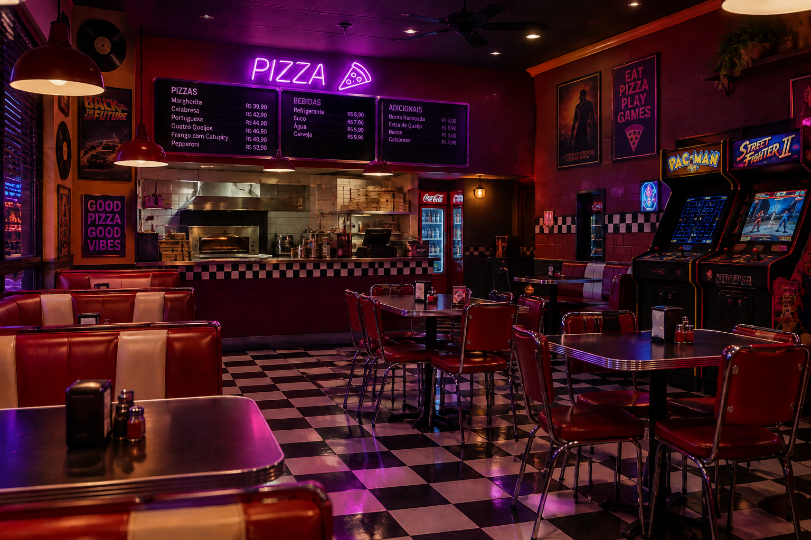

01. O salão
Um ambiente pensado para reunir pessoas e criar momentos especiais.
OBS: As imagens abaixo são ilustrativas e não representam necessariamente o produto final.

Um ambiente pensado para reunir pessoas e criar momentos especiais.
Referências visuais para uma atmosfera marcante e temática.
O sabor como parte central da experiência gastronômica.
Inspirações para uma área de jogos e diversão retrô.
Uma área externa inspirada no estilo retrô.